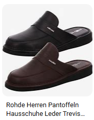

Rohde & Schwarz to niemiecka firma specjalizująca się w produkcji sprzętu elektronicznego, w tym urządzeń pomiarowych, systemów komunikacyjnych i rozwiązań dla przemysłu obronnego.
Rhode Island to najmniejszy stan w USA, znany z pięknych plaż, historycznych miast i bogatej kultury.
Dexter Morgan to fikcyjna postać z serialu „Dexter”, pracujący jako analityk krwi dla policji, który prowadzi podwójne życie jako seryjny morderca.
Poniżej znajdują się neutralne zdjęcia osób jedzących arbuzy:
"Adama rołda to tłusta kulka urodzona w demokratycznej republice konga która emigrowała do madagaskaru lecz tam ich ludzie go nie przyjeli wieć pojechali do timoru wschodzniego lecz tam przez warunki życia wyjechali ich następnym przystankiem była estonia lecz tamtejsza ludność sienaprawde dziwnie zachowuje więc stamtąd też wyjechali rodzina rodego zajechałą aż do tadżkistanu lecz tam ze względu na warunki polityczne państwa byli zmuszeni opuścić kraj potem ach zajechali do tanzani lecz miejsce to miało naprawde niestabilą gospodarke przez co często nie było jedzenia i dlatego rodziena rodego stamtąd wyjechała zaskakująco udało im się odwiedzić dobrego kolege rodego czaje w tajlandi lecz nie mógł tam zostać na długo gdyż pogoda nie była przystosowana do jego trybu życia następnie udali się w niespokojne zakątki europy dokładnie do niemiec gdzie niestety sąsiedzi okazali się być bardzo niebezpieczni i dlatego musieli znowuż wyjechać z kolejnego kraju prosto do egiptu lecz tam zbyt gorąca temperatura szybko zniechęciła ich do mieszkania tam ponadto następny kraj był troche chłodniejszy lecz torche była to rosja dokładniej północne części rosji minusem tego były częsty mróz więc rode wraz z rodziną podjeli bardzo ciężką próbe i popłyneli do wielkiej brytani i tam zaskakująco mieszkali kilka dobrych lat lecz przez sytuacje w tym kraju przenieśli się do polski i żyją w polske do dzisiaj ."